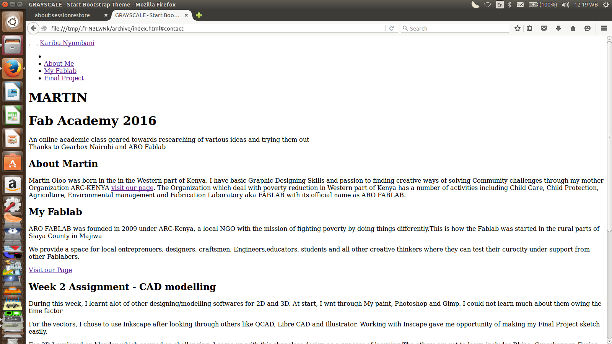
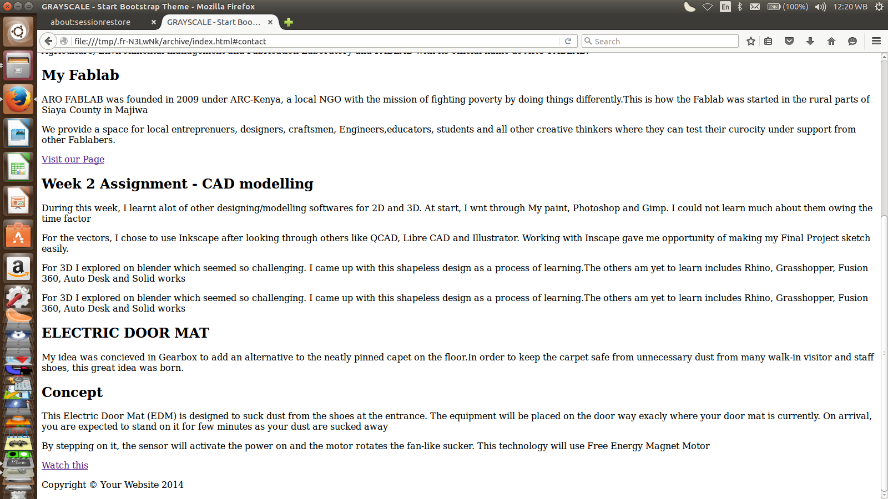
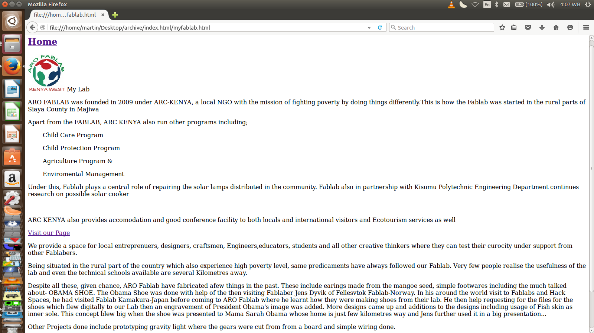
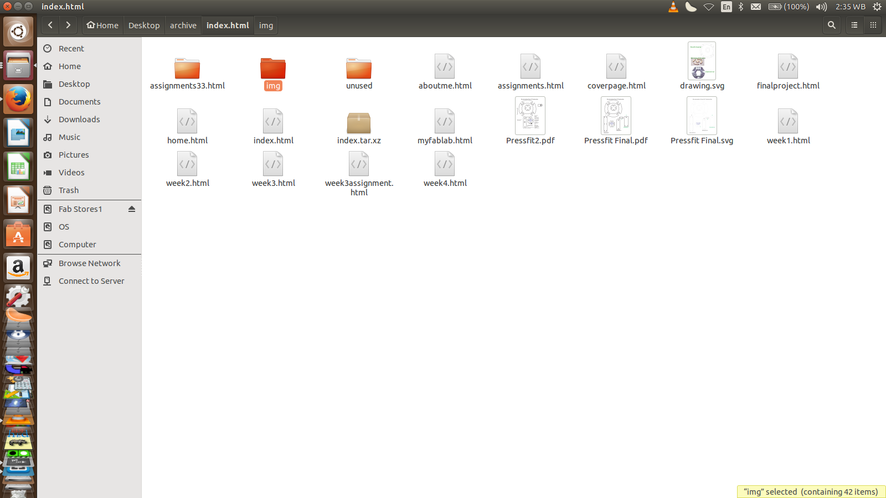
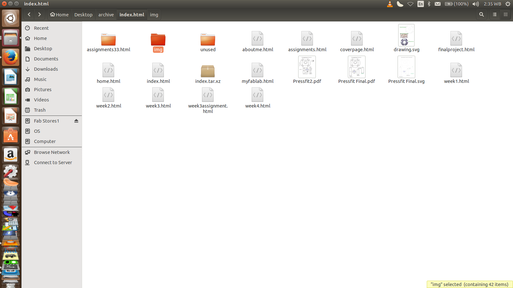
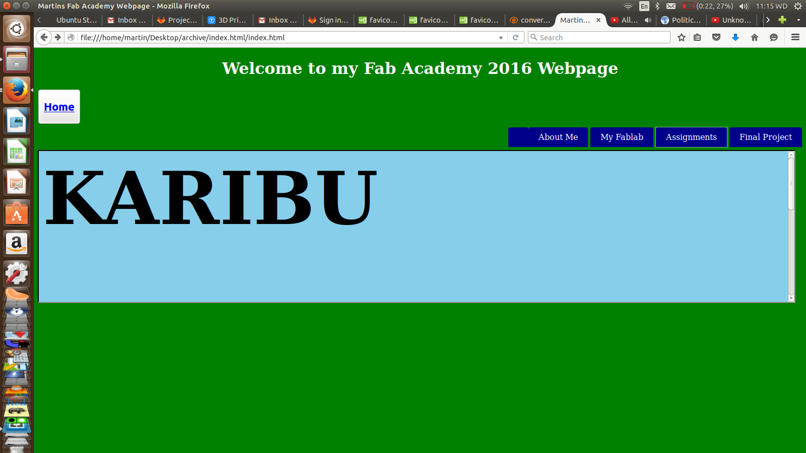
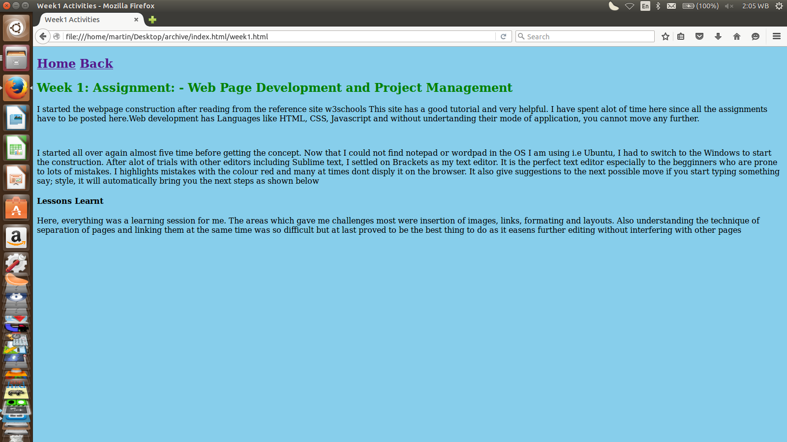
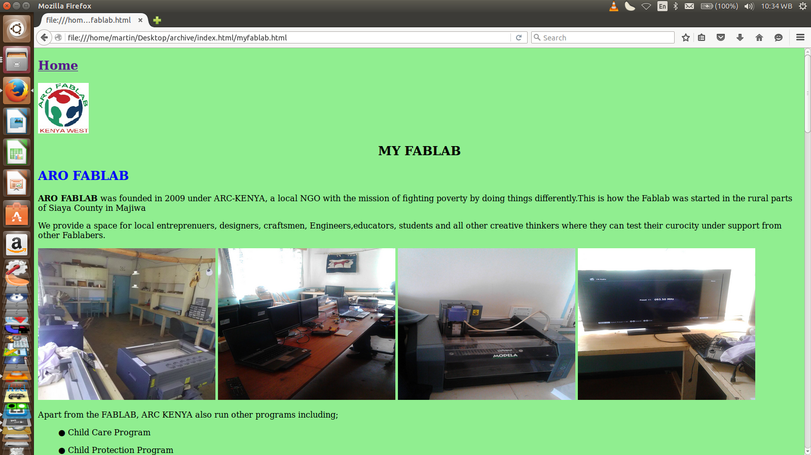
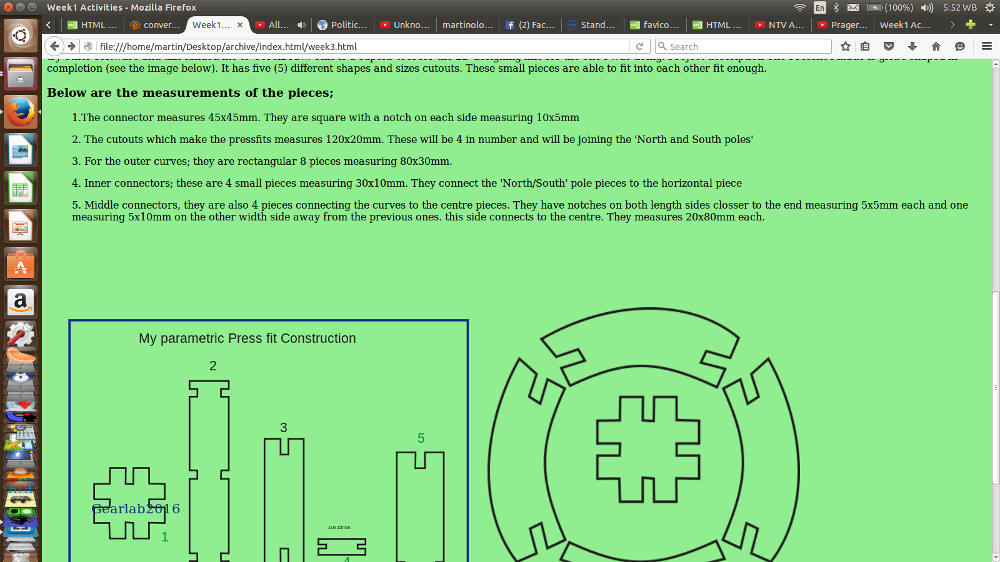

Home Back
Week 1: Assignment: - Web Page Development and Project Management
I started the webpage construction after reading from the reference site w3schools Tutorials This site has a good tutorial and very helpful. I have spent alot of time here since all the assignments have to be posted here.Web development has Languages like HTML, CSS, Javascript and without undertanding their mode of application, you cannot move any further.
  
I started all over again almost five time before getting the concept. Now that I could not find notepad or wordpad in the OS I am using i.e Ubuntu, I had to switch to the Windows to start the construction. After alot of trials with other editors including Sublime text, I settled on Brackets as my text editor. It is the perfect text editor especially to the begginners who are prone to lots of mistakes. I highlights mistakes with the colour red and many at times dont disply it on the browser. It also give suggestions to the next possible move if you start typing something say; style, it will automatically bring you the next steps as shown below
 

Lessons Learnt
Here, everything was a learning session for me. The areas which gave me challenges most were insertion of images, links, formating and layouts. Also understanding the technique of separation of pages and linking them at the same time was so difficult but at last proved to be the best thing to do as it easens further editing without interfering with other pages
Hurraa!!!
 
 